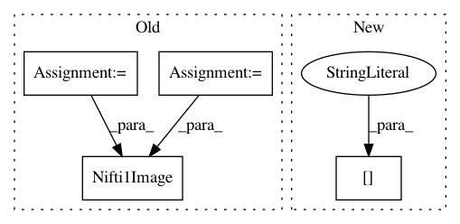

c943318502c17ea9d909e79ce898431282768cb9,plot_poldrack_space_net.py,,,#,6
Before Change
mem = Memory(cachedir="cache", verbose=3)
X, y, _, mask, affine = mem.cache(load_gain_poldrack)(smooth=0)
img_data = np.zeros(list(mask.shape) + [len(X)])
img_data[mask, :] = X.T
// prepare input data for learner
import nibabel
n_samples = img_data.shape[-1]
n_samples_train = n_samples * 8 / 10
mask_img = nibabel.Nifti1Image(mask.astype(np.int), affine)
X_train = nibabel.Nifti1Image(img_data[:, :, :, :n_samples_train], affine)
y_train = y[:n_samples_train]
X_test = nibabel.Nifti1Image(img_data[:, :, :, n_samples_train:], affine)
y_test = y[n_samples_train:]
////// Fit and predict ////////////////////////////////////////////////////////////////////////////////////////////////////////////////////
from nilearn.decoding import SpaceNetRegressor
After Change
// prepare input data for learner
n_samples = len(X)
n_samples_train = n_samples * 8 / 10
X_train = X[:n_samples_train]
y_train = y[:n_samples_train]
X_test = X[n_samples_train:]
y_test = y[n_samples_train:]
In pattern: SUPERPATTERN
Frequency: 3
Non-data size: 4
Instances
Project Name: nilearn/nilearn
Commit Name: c943318502c17ea9d909e79ce898431282768cb9
Time: 2015-07-28
Author: elvis.dohmatob@inria.fr
File Name: plot_poldrack_space_net.py
Class Name:
Method Name:
Project Name: nilearn/nilearn
Commit Name: 07bbcbb72cbfcea9ef10087167163138165c5003
Time: 2015-07-28
Author: elvis.dohmatob@inria.fr
File Name: plot_poldrack_space_net.py
Class Name:
Method Name:
Project Name: nilearn/nilearn
Commit Name: 530e3ca9148a36982c110007c081a571eff660e1
Time: 2013-05-27
Author: philippe.gervais@inria.fr
File Name: nisl/io/nifti_region.py
Class Name: NiftiMapsMasker
Method Name: transform